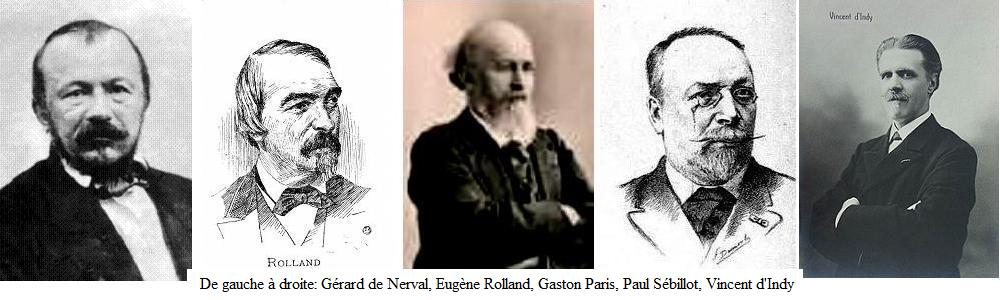
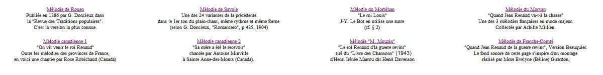
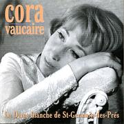

|
La "découverte" d'un antique chant populaire "Les fragments que [j'ai] pu recueillir [auprès de ma] mère, (laquelle l'avait apprise en 1788 à Hennebont, en Morbihan", nous dit-il par ailleurs), sont une traduction exacte des stances bretonnes..." Il s'agit des strophes 11/12, 14 et 19 dans la version ci-dessous que l'on peut effectivement rapprocher des strophes 25-26, 30-31 et 33-34 de la "gwerz" bretonne "An Aotroù Nann":
Beaucoup de ces sources sont, outre des recueils spécialisés, des revues consacrées aux traditions orales parlées ou chantées telles que: - le "Recueil des poésies populaires de la France" composé, en application du décret pris par le ministre de Napoléon III, Hippolyte Fortoul, selon les "Instructions" de Jean-Jacques Ampère publiées en 1852: 17 versions; - la revue "Romania" fondée en 1872 par Gaston Paris (1839 - 1903), médiéviste et philologue des langues romanes, professeur au Collège de France, membre de l'Institut en 1876 et de l'Académie française en 1896: 20 versions; - la revue "Mélusine" créée par le celtologue et folkloriste Henri Gaidoz (1842 - 1932) avec son ami Eugène Rolland (1846 - 1909) dont il publia les travaux après son décès: 11 versions; - la "Revue des Traditions populaires" créée par le folkloriste Paul Sébillot (1843 - 1918) en même temps que la Société des traditions populaires: 5 versions. Bien entendu, un certain nombre de versions sont reproduites dans deux ou plusieurs revues. |
The "discovery" of an ancient folk song "The fragments [I] was able to collect [as they were sung by] my mother, (who had learnt it, so he writes elsewhere, in 1788 in Hennebont in Morbihan), are an exact translation from the Breton..." The stanzas referred to are stanzas 11/12, 14 and 19 which may really be compared with stanzas 25-26, 30-31 and 33-34 in "Aotroù Nann".
Many of these sources are, beside individual collection books, periodicals dedicated to spoken or sung oral tradition like: - the "Recueil des poésies populaires de la France" composed, pursuant to a decree by Napoléon III's minister, Hippolyte Fortoul, in accordance with the "Instructions" published by Jean-Jacques Ampère in 1852: 17 versions; - the review "Romania" founded in 1872 by Gaston Paris (1839 - 1903), medievalist and Romance languages philologist, professor at the Collège de France, member of the Institute in 1876 and of the French Academy in 1896: 20 versions; - the review "Mélusine" created by the Celtic philologist and folklorist Henri Gaidoz (1842 - 1932) in collaboration with his friend Eugène Rolland (1846 - 1909) whose works he published after his death: 11 versions; - the "Revue des Traditions populaires" founded by the folklorist Paul Sébillot (1843 - 1918) along with the Société des traditions populaires: 5 versions. Of course, a certain amount of versions are included in two or more reviews. |
|
|
|
|
|
L'antiquité de ce chant Ce qui dans ce chant a fasciné tant de savants barbus (cf. photos ci-dessus), c'est tout d'abord sa haute antiquité. Selon l'historien Henri Irénée Marrou (1904-1977), auteur sous le pseudonyme d'Henri Davenson du "Livre des chansons" paru en 1943, cette mélodie est apparentée au cantique "Ave, Maris Stella" , ainsi qu'au choral "Erschienen ist der herrlich Tag" (bwv629) qui en est un arrangement par Jean Sébastien Bach. Ce cantique est attribué soit à Venance Fortunat (530 - 609), soit à Paul Diacre (720 -800). "On sonne pour le roi Henri Qui fait son entrée dans Paris..." qui, outre certains détails linguistiques, laisserait penser que la chanson se chantait dès 1594, date à laquelle cet événement à eu lieu. "Frañs ar Roue a zo marv/ Ma soner glaz dezhañ e pep bro" (François le roi est mort / Et l'on sonne le glas pour lui dans chaque canton). S'il s'agit de François I, ce qui est probable, cela daterait la ballade armoricaine de 1547. Dans le second type, que l'on rencontre essentiellement autour de Nantes, l'épisode merveilleux subsiste mais, peut-être sous l'influence du clergé qui se méfiait des histoires fantastiques, la Mort personnifiée y remplace la fée (ou les 3 fées du chant qui va suivre): En son chemin a rencontré La Mort qui lui a demandé: ... Veux-tu mourir dès à présent ou dêtre sept ans languissant? M. Laurent y voit le chaînon manquant entre les versions "fantastiques" armoricaines et leurs homologues "rationnelles" des marges françaises. |
The ancientness of the song It was the evident ancientness of the song that prompted at the fist place so many bearded scholars (see the picture above!) to investigating it. According to the historian Henri Irénée Marrou (1904-1977) who published in 1943 under the nom-de-plume Henri Davenson the "Livre des chansons", the tune is akin to the hymn "Ave, Maris Stella", as well as to the carol "Erschienen ist der herrlich Tag" (bwv629), which is the name by which Johann Sebastian Bac'h's arrangement goes. This hymn is ascribed to either Venance Fortunat (530-609), or Paul Diacre (720-800). "They ring the bells for king Henry Who makes his entry in Paris" hinting, beside some linguistic particulars, at the fact that in 1594, when this event occurred, the ballad was already sung. "Frañs ar Roue a zo marv/ Ma soner glaz dezhañ e pep bro" (François the king is dead, and they toll the knell for him in each shire). If King Francis I is meant, which is probable, this would allow to date the ballad to 1547. In the songs of the second kind, that were recorded above all in the Nantes area, the fantastic episode is kept, but possibly due to the influence of the clergy who were distrustful of fairies, Death personified replaces there the fairy (or the three fairies in the present case): On his way he encountered Death who has asked him: ... Do you want to die straightway or to be wilting seven years? In M. Laurent's opinion this version is the "missing link" between the Celtic Breton "supernatural" versions and their "rational" counterparts in the French speaking borderland. |
1. Le roi Louis s'en va chasser
|
1. King Louis went hunting
|
|
Les versions occitanes S'agissant d'un chant remontant au XVème siècle et de diffusion très ancienne, on ne s'étonnera pas d'en trouver des versions dans les domaines franco-provençal et occitan. Voici la liste des provinces et départements cités par George Doncieux où l'on a noté des versions de cette complainte: Basse Bretagne, Loire Inférieure, Dinannais, Valois, Vermandois, Vendée, Pays de Retz, Blésois, Rouennais, Calvados Orléanais, Touraine, Loiret, Jura, Franche-Comté, Lorraine, Vosges, Vendômois, Charente, Deux-Sèvres, Parisis, Ain, Boulonnais, Angoumois, Nivernais, Wallonie, d'une part; Bourbonnais, Auvergne, Languedoc, Nice, Limousin, Forez, Velay, Gers, Lot, Lot et Garonne, Bas-Quercy, Creuse, Poitou, Hautes Alpes, Vivarais, Piemont italien, d'autre part. C'est à la seconde catégorie qu'appartient le chant ci-après: On trouvera d'autres versions du "Roi Renaud" sur ce site consacré au Livre des Chansons d'Henri Davenson. |
The Oc language versions As this 15th century lament spread throughout France at a very early stage no wonder if scores of versions in the Southern French dialects also exist. Here is a list of provinces and "départements" quoted by George Doncieux where one or more occurrences of the lament at hand were recorded: Lower Brittany, Loire Inférieure, Dinannais, Valois, Vermandois, Vendée, Pays de Retz, Blésois, Rouennais, Calvados Orléanais, Touraine, Loiret, Jura, Franche-Comté, Lorraine, Vosges, Vendômois, Charente, Deux-Sèvres, Parisis, Ain, Boulonnais, Angoumois, Nivernais, Walloon Belgium, on the one hand; Bourbonnais, Auvergne, Languedoc, Nice, Limousin, Forez, Velay, Gers, Lot, Lot et Garonne, Bas-Quercy, Creuse, Poitou, Hautes Alpes, Vivarais, Italian Piedmont, on the other hand. To the second category belongs the song below. Other versions of "King Renaud" will be found on this site which is dedicated to the Book of Songs by Henry Davenson. |
Lo comte Arnaud, lo chivalièr, |
Le comte Arnaud, le chevalier
|
Earl Arnaud, the knight,
|
|
Diffusion mondiale du chant Les investigations de George Doncieux et ses prédécesseurs portaient surtout sur la France métropolitaine, mais un chant aussi populaire ne pouvait pas ne pas suivre les voyageurs et les marins. Ci-après, on trouvera une version de la Réunion dont la fin est celle qu'a notée le musicien Vincent d'Indy (1851 - 1931) dans son Vivarais natal: le mort fait la morale à sa femme qui rentre aussitôt à la maison s'occuper des enfants. |
Worldwide spread of the song George Doncieux and his predecessors investigated above all Metropolitan France. However so popular a song could not be confined to the motherland. It travelled along with voyagers and sailors across the oceans. The next song is a version from the Réunion Island. It has the same happy ending as the one collected by the musician Vincent d'Indy (1851 - 1931) in his native Vivarais: the dead man lectures his wife who returns home at once to look after their children. |
1. La grande Renaud s'en tire en guerre |
1. Lord Renaud comes back from war |
Version du Vivarais |
|
Chants canadiens De nombreuses versions de ce chant existent encore au Canada, en particulier dans la partie située à l'est, que l'on appelle l'Acadie. Les Français s'y installèrent à partie de 1604, une preuve de plus de l'ancienneté de ce chant. La linguiste spécialiste de l'Acadie, Geneviève Massignon (1921-1936) en a recueilli une quinzaine lors de deux voyages en 1946 et 1961. Voici l'une d'entre elle, chanté par Rose Robichaud. Un hymne national de l'Acadie fut choisi lors de la convention nationale acadienne de Miscouche en 1884. En liaison avec le choix d'un drapeau, un drapeau français orné d'une étoile dorée, c'est le cantique latin en l'honneur de la Vierge Marie, "Ave Maris Stella" (Salut, Etoile de la mer). Comme on l'a dit plus haut, cet ancien cantique est à l'origine de la plupart des mélodies sur lesquelles se chantent les versions du "Roi Renaud" en langue française, y compris celles du Canada (Cf. vidéo ci-contre). (En parlant de Renaud, voici également un lien, vers une chanson de Renaud Séchan (Miss Maggie)!) |
15 mélodies acadiennes pour le "Roi Renaud" collectées par Geneviève Massignon en 1946 et 1961. |
Canadian songs Many versions of the ballad still exist in Canada, especially in the Eastern part known as Acadia, where the French arrived in 1604, another proof of the song's antiquity. The linguist who specialized on Acacadian language, Geneviève Massignon (1921-1966) collected ca. 15 versions during two stays there, in 1946 and 1961. Here is one of them, sung by Rose Robichaud. A national anthem for Acadia was adopted during the second National Acadian Convention in 1884, along with a National flag, a French flag adorned with a golden star: it is the Latin hymn in honour of the Holy Virgin, "Ave Maris Stella" (Hail, Star of the sea). As mentioned above, this ancient hymn is the origin of most tunes to which the various versions of "King Renaud" in French language are sung, the Canadian ones inclusively (See. opposite video). (Speaking of Renaud, here is, in addition, a link to a song by Renaud Séchan (Miss Maggie)!) |
|
|
|
Chants basques Cette version est tirée de "Cent chansons populaires basques" (fascicule-spécimen) publié en 1890 par le compositeur Charles Bordes (1863-1909) Ce chant avait été déjà publié par Mme de la Villéhélio dans "Souvenir des Pyrénées: 12 airs basques" (1870) et reproduit dans la "Revue des Traditions populaires". Il consiste en Octosyllabes en quatrains. Le timbre est inspiré de la chanson française, mais le rythme est basque. |
Basque versions of the song This version is included in "Cent chansons populaires basques" (sample-copy) published in 1890 by the composer Charles Bordes (1863-1909). Previously it had been published by Mme de la Villéhélio in "Souvenir des Pyrénées: 12 Basque airs" (1870) and printed in the "Revue des Traditions populaires". It consists of octosyllables arranged in quatrains. The tune is derived from the French melody, but the beat is typically Basque. |
1. Errege Jan zaoriturik: |
1. Le roi Jean couvert de blessures |
1. King John from his injuries swayed, |
|
Un chant jamais passé de mode En conclusion de son étude de cette complainte, George Doncieux écrivait (p.124 du "Romancéro"): "Ce qu'est la "Chanson de Roland" à [l'histoire littéraire de] notre époque médiévale, la chanson de Renaud l'est justement à notre romancéro populaire. Depuis des siècles qu'elle dure en la mémoire des peuples, nulle autre n'y a pénétré si fortement, ni si largement rayonné; nulle n'a captivé à ce point le goût des artistes...C'est celle-là que rediront les chanteurs et que les connaisseurs vanteront toujours, comme le joyau incontestable de la lyrique traditionnelle du pays de France." Ces lignes étaient écrites en 1903. La même année la chanson était interprétée par Mme Amel de la Comédie Française. Le premier enregistrement phonographique, par Rachel de Ruy, date de 1905! La liste des interprètes célèbres de ce beau chant est fort longue: Yvette Guilbert, Edith Piaf, Colette Renard, Armand Mestral... Chacun d'eux a tenu à donner sa propre vision de cette tragique histoire de la "Mort cachée". A cet égard, le contraste entre l'interprétation tout empreinte de retenue de Cora Vaucaire (1950) et le décor flamboyant planté par Yves Montand (1955) est saisissant (Vidéos ci-après). . Je tiens à remercier M. Padrig Kobis de m'avoir procuré une grande partie des documents écrits et sonores utilisés dans le dossier "Aotroù Nann" et chants apparentés, et de m'avoir signalé certaines erreurs et inexactitudes. |
An evergreen song par excellence To conclude his survey of this ballad George Doncieux wrote (p.124 of "Romancéro"): "We may rightfully parallel the enduring popularity of the "Song of Roland", a masterwork of medieval written literature, with that of the "Song of Renaud", an outstanding work of song tradition. No other song was so deeply and for so many centuries engraved on the memory of the peoples and has spread so widely its radiance. No other song has captured so much the interest of artists... No other song will ever have so much appeal to both songsters and their audience, as an undisputable jewel of traditional song in the French country." These lines were written in 1903. In the same year the ballad was sung by a famous artist of the Comédie Française , Mme Amel. And the first gramophone recording of the song, by Rachel de Ruy was performed in 1905! There is a long list of famous artists who had this inspiring song on their repertoire: Yvette Guilbert, Edith Piaf, Colette Renard, Armand Mestral...Each of them made a point of giving their own vision of the tragic story of the "Concealed death". In this respect, there is a startling contrast between Cora Vaucaire's moving and restrained interpretation (1950) and Yves Montand's flourishing trumpets (1955)! (See videos below). . I am very much indebted to M. Padrig Kobis for providing the greater part of the material used in the pages "Aotroù Nann" and related, as well as fixing some errors and misrepresentations. |

***